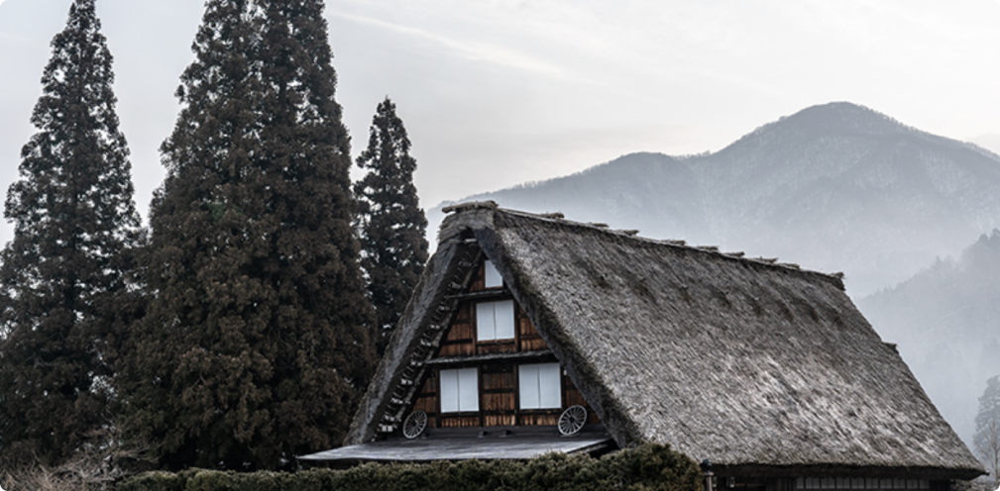
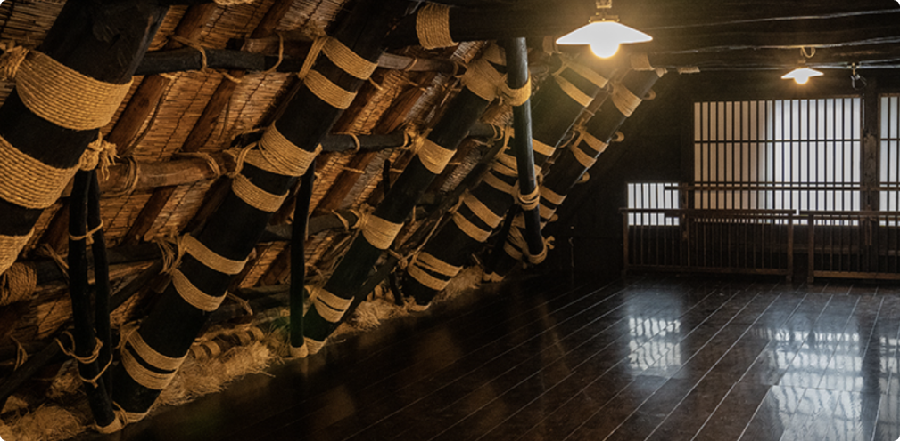
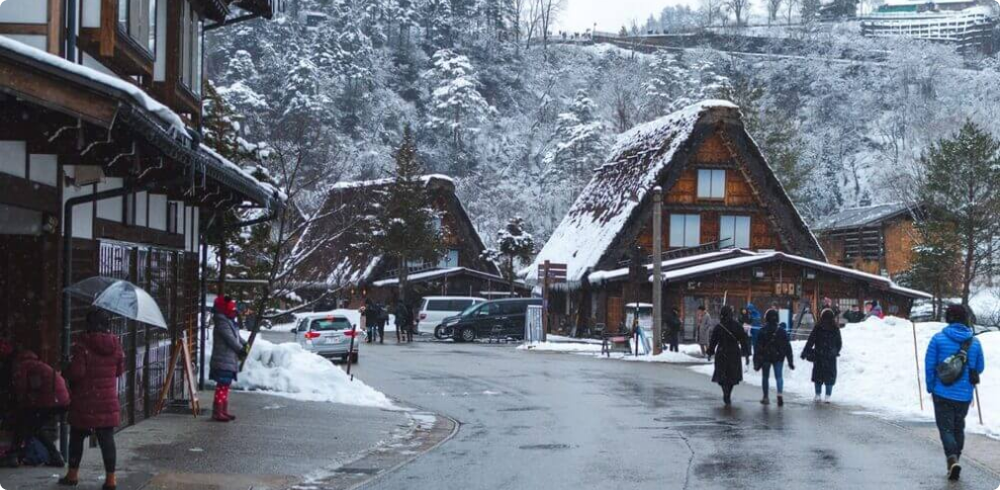
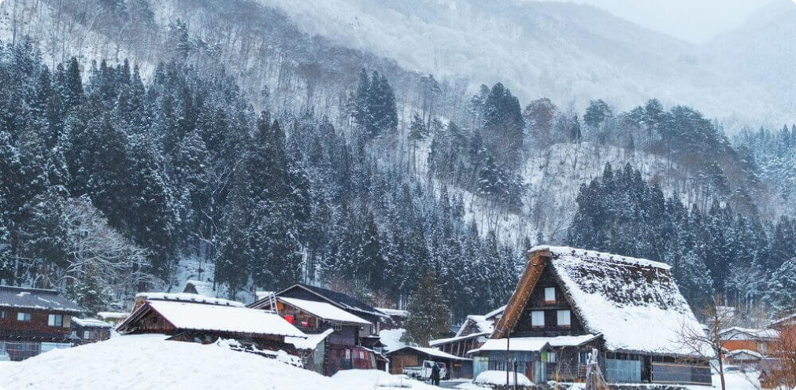
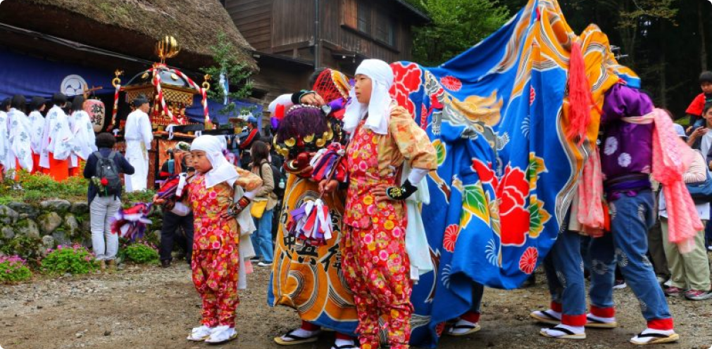

About
Gassho Houses
Gassho-zukuri and is extremely rare in Japan. No nails or any other metal materials were used during the construction of the houses. Instead, houses were made with natural resources found in the area such as wood for the structure and straw for the roof. Gassho-zukuri, or Gassho-style, refers to the shape of the roof. “Gassho” means “joining your hands together in prayer”, and the roof resembles the shape of the hands (and arms) of a praying Buddhist monk.
History and Trade
For a long time, Ogimachi and the rest of the Shirakawa-go area were cut off from the world around them due to their location in the mountains, but its people managed to survive and maintain their way of life by cultivating mulberry trees and breeding silkworms that lived on these trees in order to trade and sell raw silk. During the cold winters, people would raise these silkworms in the rafters of their Gassho houses whilst living in the lower levels.
Location and Transport
From Takayama – There are around 10 departures daily from Takayama (Nohi Bus Center) by bus. Journey time is between 50 minutes to 1 hour 7 minutes.From Kanazawa – There are around 10 departures daily from Kanazawa (Kanazawa Station Bus Terminal #2) by bus. Some of the buses stop at Gokayama while others are direct to Shirakawa-go itself. For non-stop buses, the journey time is 1 hour and 15 minutes. For buses with stops at Gokayama, the journey time to Shirakawa-go is 1 hour and 25 minutes. If you prefer to get a guaranteed seat, you can also book here for a day tour.

Weather
The climatic conditions prevailing in Shirakawa are characterized by cold and temperate weather. Shirakawa is a city with a significant rainfall. Even in the driest month there is a lot of rain. The temperature in this location is approximately 8.0 °C, as determined by statistical analysis. The precipitation level on a yearly basis amounts to 2931 mm as per the meteorological records. The balmy days of Summer commence at the end of June and conclude in September. This period encompasses the months: June, July, August, September. The best time to travel is August. However, if you want to witness the beautiful winter lights Shirakawago is known for, January to February is best.
Community
Everything in Shirakawa-go is a team effort, from educating the children about the history of the area to refurbishing and reconstructing the roofs of the Gassho-zukuri houses and protecting their homeland from disaster including fire. Since they also learn disaster prevention, it’s one of the reasons why the village is still able to exist the way it does. The homes here are still proudly family-owned. When it comes to the future of these priceless homes, there’s a local motto “don’t sell, don’t lend, don’t destroy”.